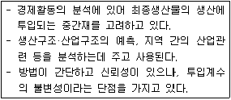
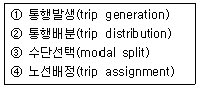
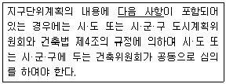
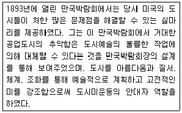

도시계획기사 (2011-06-12 기출문제)
1과목: 도시계획론
1. 다음 중 미래 도시의 새로운 계획 패러다임의 방향으로 가장 거리가 먼 것은?
- 미래 사회에 맞는 새로운 U-도시계획
- 지속가능한 도시개발로의 전환
- 지역별 특화를 위한 도농분리적 계획체계로의 전환
- 시민참여의 확대와 계획 및 개발주체의 다양화
(정답률: 알수없음)

2. 다음 중 계획인구를 산정하는 지수곡선법(exponential growth model)에 관한 설명으로 옳은 것은?
- 도시인구의 총체적 크기만을 예측하는 정주모형
- 지수곡선은 대수곡선이라고도 한다.
- 연도의 경과에 따라 보다 급격한 인구증가를 나타내는 경우에 사용한다.
- 대상 도시의 미래 인구는 그 도시가 속한 더 큰 공간적 범위의 인구의 일정 비율이 될 것이라고 가정한다.
(정답률: 64%)
3. 다음 중 린드블룸(C. Lindblom)이 주장한 점진적 계획(Incremental planning 또는 disjointed incrementalism)의 특징으로 옳은 것은?
- 논리적 일관성을 통해 최적의 대안을 제시하고자 한다.
- 구체적이고 실체적인 집단 행동을 실현시키려는 경향을 띠고 있다.
- 계획의 실행과 결과에 대한 인과관계가 명확히 구분된다.
- 지속적인 조정과 적응을 통해 계획의 목표를 추구하는 방법을 모색하고자 한다.
(정답률: 86%)
4. 도시경제분석 방법 중 아래의 설명에 해당하는 것은?

- 투입산출모형
- 변이-할당분석모형
- 입지상모형
- 지수곡선모형
(정답률: 82%)
5. 다음 중 지리정보시스템(GIS)에 대한 설명으로 옳지 않은 것은?
- 지리·공간적 정보 및 자료를 체계적으로 저장, 검색, 변형, 분석하여 사용자에게 유용한 정보를 제공한다.
- GIS에 의한 분석은 자료의 질과 사용자의 분석능력에 영향을 적게 받아 결과의 정확도나 가치가 보장된다.
- 주요 기능으로는 자료의 수집, 예비적 처리, 자료의 관리, 자료의 변환 및 분석, 결과물 제작 등이 있다.
- GIS를 이용하여 위치, 조건, 추세, 경로, 패턴, 모형 등을 조사·분석할 수 있다.
(정답률: 알수없음)
6. 도시계호기에서 활용되는 자료를 자료원에 대한 접근이 직접적이냐 간접적이냐에 따라 1차자료와 2차자료로 구분할 때 이에 대한 설명으로 옳지 않은 것은?
- 1차자료는 계획가가 원하는 현실감있는 정확한 정보를 제공해 줄 수 있지만 방대한 정보를 얻는 것에는 한계가 있다.
- 2차자료를 통해 공간적으로 멀리 떨어진 곳이나 시간적으로 조사가 불가능한 과거의 자룔를 비교적 적은 노력과 비용으로 이용할 수 있다.
- 서적이나 정기간행물, 각종 통계자료 등은 중요한 1차 자료원이다.
- 도시계호기을 위한 도시조사는 1차자료와 2차자료를 모두 활용하여 이루어지는 것이 일반적이다.
(정답률: 75%)
7. 다음 중 도시생태적 접근에 의한 토지이요 결정 이론에 해당하지 않는 것은?
- 선형지대이론
- 다핵심이론
- 사회지역형성이론
- 동심원이론
(정답률: 알수없음)
8. 다음 중 세계 최초의 환지방식에 의한 도시개발로 「토지구획정리사업에 관한 법률」이 제정되어 현대적 의미의 지역지구제를 처음으로 실시한 국가는?
- 일본
- 미국
- 독일
- 프랑스
(정답률: 54%)
9. 계획을 계속되는 선택을 통해 가장 적절한 미래의 행위를 결정하는 일련의 절차이며 행동이야말로 계획 행위의 궁극적인 산물이라고 정의한 학자는?
- Davidoff와 Reiner
- Healey
- Harris와 Ullman
- Howard
(정답률: 80%)
10. 다음 중 가도시화(pseudo-urbanization) 현상에 대한 설명으로 옳지 않은 것은?
- 도시지역의 인구는 증가하나 일자리나 생활터전이 충분하지 못한 상황이다.
- 도시의 공간적 범위가 빠른 속도로 확대되어 각종 기능이 급격하게 성장하는 초고속 도시화 현상이다.
- 동남아시아, 라틴아메리카 등 제3세계로 불리는 개발도상국들에서도 일반적으로 발생하였다.
- 도시 내 비공식 경제부문인 노점상, 일용노동자 등의 비율이 매우 높은 현상을 보인다.
(정답률: 73%)
11. 다음 중 도시의 구성요소에 대한 설명으로 옳지 않은 것은?
- '시민'은 도시를 구성하는 가장 기본적인 요소인 동시에 도시가 존재하는 이유이기도 하다.
- 게데스(P. Geddes)는 '도시 활동'을 생산과 소비로 구분하였다.
- '토지'와 '시설'은 도시 공간상에서 물리적 상태로 존재하며, 도시의 형태를 만들어내게 된다.
- '토지'와 '시설'에 대한 물리적 계획의 3대 요소는 밀도, 동선, 배치이다.
(정답률: 50%)
12. 다음 중 케빈 린치(Kevin Lynch)가 분류한 도시 이미지를 구성하는 5가지 요소가 모두 옳은 것은?
- 도로(path), 광장(plaza), 공원(park), 건축물(building), 지구(district)
- 도로(path), 하천(river), 공원(park), 중심지구(CBD), 건축물(building)
- 경계(edge), 랜드마크(landmark), 결절점(node), 도로(path), 지구(district)
- 경계(edge), 하천(river), 랜드마크(landmark), 결절점(node), 중심지구(CBD)
(정답률: 알수없음)
13. 토지이용규제의 실현수단을 직접적 수단과 간접적 수단으로 분류할 때, 다음 중 규제와 유도를 주요 내용으로 하는 간접적 수단에 해당하지 않는 것은?
- 지역·지구·구역의 지정
- 세금, 보조금의 혜택
- 도시개발사업
- 도시시설의 정비
(정답률: 알수없음)
14. 다음 중 경관설계에 대한 설명으로 가장 거리가 먼 것은?
- 그 지역에 살고 있는 주민의 특성을 파악하여 특정집단의 기호에 맞게 설계하여 지역주민의 만족도를 높인다.
- 좋은 풍경을 만드는 것으로, 풍경을 구성하는 여러가지 공공시설이나 공공공간을 좋은 모습으로 제공하는 것이다.
- 사회의 기반을 담당하는 대규모의 시설이나 공간을 다루는 것은 지역의 생태계나 역사·문화가 배려되어야 한다.
- 사람들이 바라보아 싫증나지 않고, 사용하면서 애착이 생기며, 긴 시간이 흐름에 따라 맛이 깊어지는 것을 알려줌으로써 의미를 가진다.
(정답률: 73%)
15. 다음 중 중세 유럽의 도시가 갖는 물리적 특성에 대한 설명으로 옳지 않은 것은?
- 성벽과 대규모 사원이 도시 공간의 주된 구성요소이다.
- 도심을 강조하기 위해 직선을 중심으로 계획하고, 엄격한 용도규제를 통하여 도시내부 기능을 분리하였다.
- 필요한 기회가 주어질 때마다 이를 활용하는 유기적 계획(organic planning)의 형태로 진행되었다.
- 방어를 위해 사용된 해자, 운하, 강이 개별도시를 고립시켰다.
(정답률: 84%)
16. 다음 중 토지이용과 교통간의 관계에 대한 설명으로 옳지 않은 것은?
- 토지이용 또는 토지개발은 교통수요를 유발하는 요인이다.
- 교통수요의 발생은 토지이용에 영향을 주며 지가상승의 요인이 된다.
- 토지이용이 교통에 미치는 영향은 교통수요로 나타나며 교통이 토지이용에 미치는 영향은 이동성으로 표현된다.
- 토지이용과 교통은 상호의존적인 순환관계를 가진다.
(정답률: 70%)
17. 다음 중 독시아디스(C. A. Doxiadis)가 구분한 인구규모에 따른 도시 구분에 해당하지 않는 것은?
- 대도시(large city)
- 거대도시(metropolis)
- 세계도시(ecumenopolis)
- 성장도시(dianapolis)
(정답률: 55%)
18. 다음 중 교통수요 4단계 추정법의 순서가 옳게 나열된 것은?

- ①-③-④-②
- ①-③-②-④
- ①-④-③-②
- ①-②-③-④
(정답률: 50%)
19. 다음 중 도시관리계획의 내용에 해당하지 않는 것은?
- 용도지역·용도지구의 지정 또는 변경에 관한 계획
- 공간구조, 생활권의 설정 및 인구의 배분에 관한 계획
- 개발제한구역·도시자연공원구역·시가화조정구역·수산자원보호구역의 지정 또는 변경에 관한 계획
- 도시개발사업이나 정비사업에 관한 계획
(정답률: 알수없음)
20. 다음 중 고대 로마 도시의 도시계획적 특성에 대한 설명으로 옳지 않은 것은?
- 그리스 도시들보다 체계적으로 건설되었으며 규모가 훨씬 컸다.
- 로마의 중심광장인 아고라는 신전, 법정, 의사당 등의 복합적인 기능을 수행하였다.
- 평탄한 지형에 형성되었고, 넓고 체계적인 도로망을 갖추었다.
- 시저(Caesar)는 교통문제의 해결을 위해 마차의 주간통행금지법을 시행하였다.
(정답률: 62%)
2과목: 도시설계 및 단지계획
21. 다음 중 지구단위계획에서 대지 내 공지를 확보하고자 하는 경우의 고려사항으로 옳지 않은 것은?
- 한 개 필지에 국한되는 대지 내 공지의 지정을 가급적 지양하고 가구 및 획지 내 대지 상호 간 또는 가구 및 획지의 연계체계를 고려한다.
- 공개공지의 위치를 분산시키지 말고 가급적 인접대지와 면한 부분에 배치하여 유효하게 활용하도록 고려한다.
- 보차(步車)혼용통로 지정시에는 벽면한계선을 병행 지정하도록 하고 건축물 내부 공중회랑(空中回廊) 또는 피로티로 조성된 공공통로에 대한 적용도 고려한다.
- 공개공지를 피로티구조로 할 경우에는 유효높이가 최소 6미터 이상이 되도록 한다.
(정답률: 53%)
22. 다음 중 도시계획시설의 결정·구조 및 설치기준에 따른 용도지역별 도로율 기준이 옳은 것은?
- 주거지역 : 10% 이상 15% 미만
- 상업지역 : 20% 이상 25% 미만
- 공업지역 : 10% 이상 20% 미만
- 녹지지역 : 5% 이상 10% 미만
(정답률: 알수없음)
23. 다음 중 페리(C. A. Perry)가 제안한 근린주구의 기본원칙과 거리가 먼 것은?
- 학교를 비롯한 기타 공공시설은 근린주구의 중심 위치에 적절히 통합하여 배치하도록 한다.
- 주민을 대상으로 하는 상업시설은 근린주구 외부의 도로결절점 및 간선도로변에 위치하도록 한다.
- 하나의 초등학교를 유지할 수 있는 인구규모로 하며, 물리적 크기는 인구밀도에 따라 결정된다.
- 내부 가로망은 단지 내의 교통량을 원활히 처리하고 통과 교통을 방지 할 수 있도록 한다.
(정답률: 54%)
24. 다음 중 밀톤케인즈(Milton Keynes)신도시계획의 주요내용으로 옳지 않은 것은?
- RED WAY를 통해 차량과 보행자를 분리하고 있다.
- 주요 간선도로는 격자형으로 이루어져 있다.
- 커뮤니티센터는 모든 주택으로부터 500m를 넘지 않도록 계획되어 있다.
- 초기의 뉴타운에서와 같이 내부로 향하는 내향적 근린주구로서 계획되었다.
(정답률: 50%)
25. 다음 중 경관분석의 방법에 해당하지 않는 것은?
- 메쉬(mesh)에 의한 방법
- 그린 매트릭스(green matrix)에 의한 방법
- 시각회랑(visual corridor)에 의한 방법
- 기호화 방법
(정답률: 67%)
26. 다음 중 아래의 설명에서 밑줄 친 내용에 해당하지 않는 것은?

- 건축물의 높이와 최고한도 또는 최저한도에 관한 사항
- 건축물의 배치·형태·색채 또는 건축선에 관한 계획
- 경관계획
- 건축물의 허용용도와 불허용도에 관한 사항
(정답률: 30%)
27. 다음 중 도로의 노면굴착을 수반하는 지하매설물을 공동수용함으로써 도시미관, 도로구조의 안전과 원활한 교통의 소통을 위하여 지하에 매설하는 시설물을 무엇이라 하는가?
- 공동구
- 지중매설물
- 배수시설물
- 공급시설
(정답률: 75%)
28. 다음 건물의 용적률은 얼마인가? (단, 정사각형의 평지이고, 지하층이 없이 높이가 4층인 직육면체 건물이다.)
- 168%
- 148%
- 48%
- 22%
(정답률: 37%)
29. 다음 중 제1종지구단위계획의 유형과 그 목적에 대한 설명이 옳지 않은 것은?
- 기존 시가지 관리형 - 도시성장 및 발전에 따라 그 기능을 재정립할 필요가 있는 곳으로 기반시설과 건축계획을 연계시키고자 하는 경우
- 기존 시가지 정비형 - 기존의 저밀 단독주택지 주변을 공동주택단지로 개발하여 필요한 기반시설을 정비하고 관리할 필요가 있는 경우
- 기존 시가지 보전형 - 도시형태과 기능을 현재의 상태로 유지·정비하는 것이 더욱 바람직하여 개발보다 유지관리에 초점을 두고자 하는 경우
- 신시가지 개발형 - 도시 안에서 상업 등 특정기능을 강화하거나 도시팽창에 따라 기존 도시의 기능을 흡수·보완하는 새로운 시가지를 개발하고자 하는 경우
(정답률: 28%)
30. 다음 중 지구단위계획에 대한 도시관리계획에 대한 도시관리계획결정도의 아래표시기호가 의미하는 내용으로 옳은 것은?
- 공공보행통로
- 보차분리통로
- 보행주출입구
- 공개공지접근로
(정답률: 알수없음)
31. 공동주택을 건설하는 지점의 소음도가 최소 얼마 이상인 경우에 방음시설을 설치하여야 하는가?
- 45데시벨
- 55데시벨
- 65데시벨
- 75데시벨
(정답률: 84%)
32. 2000세대 이상인 공동주택을 건설하는 주택단지에 이르는 진입도로의 폭 기준으로 옳은 것은?
- 20m 이상
- 15m 이상
- 12m 이상
- 8m 이상
(정답률: 70%)
33. 국지도로의 형태 중 하나인 루프형(loop) 도로에 관한 다음의 설명 중 옳지 않은 것은?
- 불필요한 차량의 진입이 배제된다.
- 막다른 골목(cul-de-sac)과 같은 주거환경의 안전성이 확보된다.
- 교차점이 많아 방향성이 불분명하다.
- 외곽부에서 내부로의 진입이 제한되므로 차량의 우회교통이 발생한다.
(정답률: 65%)
34. 우리나라에 상세계획제도가 도입된 것에 대한 설명으로 옳은 것은?
- 2000년대 초반에 들어 처음 도입되었다.
- 도시설계제도의 한계를 보완한다는 명분으로 도입되었다.
- 상세계획은 주로 건축물의 규제에 관한 것이다.
- 도시설계제도와 동일한 근거법에 의해 제도화 되었다.
(정답률: 알수없음)
35. 다음 중 미국의 동남부 지역을 중심으로 시작된 도시설계 패러다임인 뉴어바니즘(New Urbanism)에 대한 설명으로 옳지 않은 것은?
- 전통적인 커뮤니티 형성에 초점을 맞추고 TND(Traditional Neighborhood Development)도 뉴어바니즘의 주요 조류 중 하나이다.
- 도시의 무분별한 확산에 의해 발생하는 도시 문제를 극복하기 위한 대안으로 시작되었다.
- 슈퍼블록을 활용한 보행권 확보에 초점을 둔다.
- 압축적이고 복합적인 용도의 토지이용을 추구한다.
(정답률: 알수없음)
36. 다음 중 체육시설의 설치·이용에 관한 법률상의 공공체육시설의 구분에 해당하지 않는 것은?
- 전문체육시설
- 생활체육시설
- 직장체육시설
- 여가체육시설
(정답률: 46%)
37. 다음 중 주거단지계획의 목표와 가장 거리가 먼 것은?
- 인간이 쾌적하고 건강한 생활을 하도록 필요한 조건을 갖추어야 한다.
- 공동체 의식을 형성할 수 있도록 주민들이 서로 만나고 대화할 수 있는 시설의 확보가 필요하다.
- 주거환경의 수요자인 주민의 요구와 기회를 충분히 고려하여야 한다.
- 최대한 고층화하는 것만이 개발경제성을 높일 수 있다.
(정답률: 73%)
38. 다음 중 지구단위계획 수립 시 환경관리계획의 목표에 해당하지 않는 것은?
- 개발로 인한 자연환경 피해의 최소화
- 자연생태계 보존 및 순환체계의 유지
- 자연에너지의 활용 및 에너지 절감
- 불투수포장의 확대로 인한 물순환체계의 유지
(정답률: 90%)
39. 다음 중 보행자통행이 주이고 차량통행이 부수적인 도로계획기법으로, 1970년 네덜란드 델프트시에서 최초로 등장한 본엘프(Woonerf)가 대표적인 것은?
- 보차공존도로
- 보행전용도로
- 카프리존
- 보차혼용도로
(정답률: 59%)
40. 다음 중 지구단위계획에 대한 설명으로 옳지 않은 것은?
- 지구단위계획구역 및 지구단위계획은 도시기본계획으로 결정한다.
- 인간과 자연이 공존하는 환경친화적 환경을 조성하고 지속가능한 개발 또는 관리가 가능하도록 하기 위한 계획이다.
- 제1종 지구단위계획은 향후 10년 내외에 걸쳐 나타날 시·군의 성장·발전 등의 여건변화와 지구단위계획구역 및 그 주변지역의 미래모습을 상정하여 수립하는 계획이다.
- 지구단위계획을 통한 구역의 정비·기능 재정립의 개선효과의 인근까지 미쳐 시·군 전체의 기능이나 미관 등의 개선에 도움을 주기 위한 계획이다.
(정답률: 55%)
3과목: 도시개발론
41. 도시개발사업의 시장분석과 관련하여 개발수요 분석을 위한 정성적 예측모형에 해당하지 않은 것은?
- 시나리오법
- 인과분석법
- 델파이법
- 판단결정모델
(정답률: 17%)
42. 정비기잔시설은 양호하나 노후·불량 건축물이 밀집한 지역에서 주거환경을 개선하기 위해 시행하는 정비사업은?
- 주거환경개선사업
- 주택재개발사업
- 주택재건축사업
- 도시환경정비사업
(정답률: 30%)
43. 다음 중 델파이법에 관한 설명으로 옳지 않은 것은?
- 조사하고자 하는 특정사항에 대해 일반인 집단을 대상으로 반복 앙케이트를 행하여 의견을 수집하는 방법이다.
- 예측을 하는데 회의방식보다 서면을 통한 설문방식이 올바른 결론에 도달할 가능성이 놑다는 가정에 근거한다.
- 예측과제의 추출처리 → 조사표 설계 → 조사대상자 선정 → 조사실시 → 조사결과의 집계와 분석 과정을 거친다.
- 최초의 앙케이트를 반복 수렴한다는 데에서 여러 사람의 판단이 피드백되기에 결론을 의미있게 받아들 수 있다.
(정답률: 알수없음)
44. 다음 중 토지의 혼합적 이용에 따른 장점으로 옳지 않은 것은?
- 교통혼잡의 감소
- 에너지 낭비의 감소
- 직주근접을 통한 통행거리의 감소
- 토지용도구분의 단순화에 따른 외부불경제 효과 감소
(정답률: 50%)
45. 다음 중 개발(사업)계획과 근거법령의 연결이 옳지 않은 것은?
- 도시개발사업계획 : 도시개발법
- 도시·주거환경정비기본계획 : 도시 및 주거환경정비법
- 도시환경정비사업 : 도시 및 주거환경정비법
- 재정비촉진계획 : 택지개발촉진법
(정답률: 알수없음)
46. 다음 중 아래의 설명에 해당하는 인물은?

- D. H. Burnham
- C. Stein
- S. Giedion
- L. Mumford
(정답률: 31%)
47. Calthorpe(1993)가 정리한 TOD(Transit Oriented Development)의 원칙으로 옳지 않은 것은?
- 지상공간이 아닌 지하공간을 최대한 활용
- 주택의 유형, 밀도, 비용의 혼합 배치
- 공공공간을 건물배치 및 근린생활의 중심지로 조성
- 기존 근린지구 내에 대중교통 노선을 따라 재개발 촉진
(정답률: 70%)
48. 다음 중 합작사업(Joint Venture)에 대한 설명으로 옳지 않은 것은?
- 전형적으로 다수의 소액투자가가 자본을 출자한다.
- 신디케이트와는 달리 합작회사의 경우는 극소수의 개인 또는 기관만이 포함된다.
- 일시적인 경영상의 거래관계를 위하여 형성되는 공동사업은 제외한다.
- 일반적으로 2인 혹은 그 이상의 주체가 부동산개발 등의 특정목적을 달성하기 위해 공동으로 사업을 전개하는 기업형태다.
(정답률: 알수없음)
49. 다음 중 부동산증권화를 위한 방법으로 가장 거리가 먼 것은?
- 프로젝트파이낸싱(Project Financing)
- 주택저당증권(Mortgage Backed Securities)
- 자산담보부증권(Asset Backed Securities)
- 부동산투자신탁(Real Estate Investment Trust)
(정답률: 40%)
50. 다음 중 개발권양도제(TDR)의 장점으로 보기 어려운 것은?
- 공공의 비용부담을 줄이면서 토지이용규제목표를 달성할 수 있다.
- 개발권의 할당치와 규제치를 시간적·객관적으로 고정함으로써 도시개발의 시기와 방향을 규제할 수 있다.
- 교환비율의 규정, 개발권 매매시장의 유지와 관련한 세부적인 문제를 해결할 수 있다.
- 개발유도지역의 토지주는 개발권 매입을 통해 고밀도 개발을 수행하여 경제적 이익을 얻을 수 있다.
(정답률: 19%)
51. 계획단위개발(PUD)의 문제점으로 가장 거리가 먼 것은?
- 주택형식 디자인의 유동성이 크고 클러스터링으로 인해 다양한 배치가 불가능하다.
- 평범한 고밀도단지를 형성할 우려가 있다.
- 고용기회를 갖추지 못한 채 대량의 인구를 입주시킬 우려가 있다.
- PUD의 제안, 심사, 협상, 공청회 등 시행과정에 과도한 시간이 소요된다.
(정답률: 55%)
52. 다음 중 수용 또는 사용방식에 비하여 환지방식이 갖는 장점으로 가장 거리가 먼 것은?
- 최소한의 사업비 투입으로 공공시설을 확보할 수 있다.
- 조성 후 분양을 통한 수익을 기대할 수 있다.
- 체비지매각대금을 통하여 사업비 부담이 경감된다.
- 기존의 시설 부지를 최대한 반영할 수 있다.
(정답률: 54%)
53. 다음 중 저당제도와 비교하여 담보신탁제도가 갖는 특징으로 옳지 않은 것은?
- 대출채권 유동화 : 추진이 용이
- 물상대위권 행사 : 압류 불필요
- 신규 임대차·후순위권리 설정 : 배제가능(담보가치 유지에 유리)
- 환가방법 : 신탁회사 공매
(정답률: 알수없음)
54. 다음 중 Robert Goodland(1994)가 제안한 지속가능한 도시개발(sustainable development)의 요소에 해당하지 않는 것은?
- 경제적 지속성
- 환경적 지속성
- 사회적 지속성
- 제도적 지속성
(정답률: 알수없음)
55. 다음 중 기업도시의 기능별 유형에 해당하지 않는 것은?
- 제조업과 교역위주의 산업교역형 기업도시
- 연구개발 위주의 지식기반형 기업도시
- 관광·레저·문화 위주의 관광레저형 기업도시
- 지역의 정체성을 살려주는 특성화형 기업도시
(정답률: 알수없음)
56. 다음 중 기반시설의 종류에 해당하지 않는 것은?
- 주거환경시설
- 공공·문화체육시설
- 보건위생시설
- 공간시설
(정답률: 40%)
57. 다음 중 마케팅 전략수단인 4Ps 전략의 4Cs 전략으로서의 전환 내용이 옳게 연결된 것은?
- 홍보(Promotion) → 의사소통(Communication)
- 상품(Product) → 편리성(Convenience)
- 가격(Price) → 소비자(Customer Value)
- 장소(Place) → 비용(Cost to the Customer)
(정답률: 50%)
58. 다음 중 88올림픽 이후의 주택가격 폭등에 대처하기 위한 주택 대량 공급 방안으로 건설된 수도권 1기 신도시만을 나열한 것은?
- 분당, 일산, 과천, 김포, 목동
- 분당, 일산, 평촌, 산본, 중동
- 화성, 송파, 파주, 분당, 일산
- 목동, 과천, 상계, 영통, 광명
(정답률: 55%)
59. 부동산 시장 및 각종 생산과 설비를 위한 투자의 경우에도 널리 사용되는 개념으로, 기업의 부채에 대한 이자가 영업이익의 변동 세후 순이익의 변동을 확대시키는 현상은?
- 승수효과
- 꾸르노효과
- 레버리지효과
- 파레토효과
(정답률: 67%)
60. 다음 중 도시개발사업의 타당성 분석에 관한 설명으로 옳지 않은 것은?
- 타당성 분석은 해당 프로젝트 시행 이전에 사전적으로 이루어지는 것이 일반적이다.
- 사업성 분석에서의 기본은 평가지표, 프로젝트의 비용과 수입의 추정이다.
- 프로젝트의 경제성 평가지표로는 비용-편익비(B/C ratio), 현재가치 순이익(PVNB), 내부수익률(IRR) 등이 있다.
- 사업성 및 경제성 분석으로 수출기반모형과 다지역 투입산출모형이 이용된다.
(정답률: 60%)
4과목: 국토 및 지역계획
61. 다음 중 인구와 각종 기능이 집중함으로 인해 수도권에 발생할 수 있는 문제점에 해당하지 않는 것은?
- 교통난 심화
- 주택가격의 급등
- 환경 문제의 심화
- 지방자치제의 퇴보
(정답률: 74%)
62. 다음 쇄신확산의 유형 중 일반적으로 아래와 같은 특징을 갖는 것은?
- 전염적 확산
- 계층적 확산
- 이동적 확산
- 파상적 확산
(정답률: 37%)
63. 다음 중 지속가능한 개발을 위한 토지이용전략에 해당하지 않는 것은?
- 대중교통 지향적인 교통망계획
- 직주근접형 도시개발
- 개발권 양도를 통한 녹지지역의 보전
- 교외지역의 전원주택개발을 통한 도시 확산 유도
(정답률: 알수없음)
64. 다음 중 성장거점(growth pole)이론에 의한 성장의 메카니즘을 구성하는 내용이 옳지 않은 것은?
- 기술적으로 진보되고 쇄신의 가능성이 높다.
- 산업 간의 전·후방 연계의 승수효과를 유발한다.
- 대도시로의 집중에 의한 집적 불경제 효과가 나타난다.
- 성장을 유도·확산시킨다.
(정답률: 50%)
65. 토다로(Michael Todaro)의 인구이동 모형에 대한 설명이 가장 타당한 것은?
- 주로 선진국의 농촌과 도시 간의 인구이동현상을 설명하는 모형이다.
- 도시에서 주변 농촌으로 역류하는 인구이동현상을 설명하는 모형이다.
- 실질소득보다 기대소득의 개념으로 인구이동현상을 설명하는 모형이다.
- 사회주의 국가의 농촌과 도시 간의 인구이동현상을 설명하는 모형이다.
(정답률: 70%)
66. 다음 중 지방자치단체로서 시와 읍의 설치기준이 되는 각각의 인구규모 기준이 모두 옳은 것은?
- 시 - 5만, 읍 - 2만
- 시 - 5만, 읍 - 3만
- 시 - 6만, 읍 - 2만
- 시 - 6만, 읍 - 3만
(정답률: 46%)
67. 다음 중 생산요소의 지역간 이동이 자유롭게 허용된다면 자연히 지역간 형평이 달성된다고 보는 지역 균형성장론에 해당하는 것은?
- 성장거점이론
- 신고전학파의 지역경제성장이론
- 종속이론
- 누적인과모형
(정답률: 73%)
68. 지역의 흡인요인(pull factor)과 압출요인(push factor) 및 출발지와 목적지간의 중간 개입 장애요인 등의 측면에서 인구이동이론을 발전시킨 최초 학자는?
- E. S. Lee
- E. G. Ravenstein
- M. J. Green wood
- M. Todaro
(정답률: 58%)
69. 다음 중 국토기본법에 따라 국토종합계획에 포함되어야 하는 사항으로 가장 거리가 먼 것은?
- 주택, 상하수도 등 생활여건의 조성 및 삶의 질 개선에 관한 사항
- 지하공간의 합리적 이용 및 관리에 관한 사항
- 용도지역별 개발밀도에 관한 사항
- 국토의 균형발전을 위한 시책 및 지역산업육성에 관한 사항
(정답률: 46%)
70. 순위규모법칙인 Zipf의 모형에서 q에 대한 설명으로 가장 거리가 먼 것은?
- q = 1 인 경우 : 등위규모분포 상태로 도시체계가 전체적으로 균형이 잡힌 상태다.
- q < 1 인 경우 : 종주분포로서 상위 몇몇 도시에 인구가 과다하게 밀집한다.
- q가 0으로 접근하는 경우 : 도시계층이 형성되지 못한 상태로 모든 도시들이 같은 규모를 가진다.
- q가 무한대로 수렴하는 경우 : 한 개 도시만 형성 즉, 도시국가를 의미한다.
(정답률: 60%)
71. 다음 중 국토기본법에 의한 국토조사 중 정기조사를 실시하는 기간은?
- 매년
- 2년 단위
- 3년 단위
- 5년 단위
(정답률: 55%)
72. 다음 중 국토종합계획의 수립권자로 옳은 것은?
- 대통령
- 행정안전부장관
- 국무총리
- 국토해양부장관
(정답률: 59%)
73. 클라센(L. H. Klaassen)의 지역 분류 기준은?
- 성장률과 소득수준
- 산업별 인구규모
- 동질성과 의존성
- 사회간접자본과 생산활동
(정답률: 64%)
74. 다음 중 이론가와 산업의 입지이론의 연결이 옳지 않은 것은?
- 베버(Weber) - 최소비용 입지론
- 뢰슈(Lösch) - 최대수요 입지론
- 튀넨(Thünen) - 중심지 이론
- 호텔링(Hotelling) - 상호의존적 입지론
(정답률: 37%)
75. 다음 중 제2차 국토종합개발계획(1982-1991)의 생활권 구분에서 농촌도시 생활권에 해당하지 않는 것은?
- 영월생활권
- 서산생활권
- 점촌생활권
- 영주생활권
(정답률: 50%)
76. 다음 중 중심지 이론(central place theory)의 기본 가정으로 옳지 않은 것은?
- 지형은 평탄하다.
- 공간상에 인구가 균일하게 분포한다.
- 철도망과 도로망을 구비한 지역 공간이다.
- 수송비용은 모든 방향으로 같고, 거리에 비례한다.
(정답률: 36%)
77. 1930~1940년대 영국에서 작성된 보고서로 그린벨트와 농촌의 토지이용에 관한 내용을 담고 있어 농촌계획이 제도화되는 계기가 된 것은?
- 바로우(Barlow) 보고서
- 아스와트(Uthwatt) 보고서
- 스코트(Scott) 보고서
- 펄로프(Perloff) 보고서
(정답률: 알수없음)
78. 다음 중 베버(Alfred Weber)가 주창한 고전적 입지론의 입지인자에 해당하지 않는 것은?
- 운송비
- 노동비(勞動費)
- 집적이익(Agglomeration)
- 지가(地價)
(정답률: 59%)
79. 다음 중 경제기반이론(Economic Base Theory)에 관한 설명으로 가장 거리가 먼 것은?
- 기반활동만이 지역경제의 원동력이고 비기반활동은 지역성장에 기여하지 않는 부수적인 활동이라고 가정한다.
- 개념적으로 지역의 경제활동을 단순하게 기반활동과 비기반활동으로 분류하기 어려운 산업활동이 있다.
- 지역의 성장이 지역에서 생산되는 재화의 외부 수요에 의해 결정된다는 것에 기초한다.
- 경제기반승수가 계속 변화한다고 가정하기 때문에 모형은 실제로 단기 예측에는 부적절하다.
(정답률: 70%)
80. 다음 중 제4차 국토종합계획이 제4차 국토종합계획 수정계획(2006-2020)으로 변경된 배경으로 가장 거리가 먼 것은?
- 행정중심복합도시 등 국가 중추 기능의 지방분산에 따른 국토공간구조의 변화를 반영할 필요성
- 지역 간, 계층 간 통합과 상생발전을 위한 방안 제시의 필요성
- 주요 대도시의 주택 부족문제를 해결하기 위한 주택의 대량 건설과 보급의 필요성
- 남·북한 교류협력을 더욱 심화시키고 장기적인 국토통일을 염두에 둔 한반도 차원의 국토구상 마련 필요성
(정답률: 54%)
5과목: 도시계획관계법규
81. 다음 중 도시개발사업의 시행자가 도시개발사업에 필요한 경비에 충당하기 위하여 지정할 수 있는 것은?
- 상환지
- 환지
- 보류지
- 체비지
(정답률: 75%)
82. 다음 중 도시공원 및 녹지 등에 관한 법뮬에 따른 '공원녹지'에 해당하지 않는 것은?
- 저수지
- 도시공원
- 유원지
- 도시자연공원구역
(정답률: 67%)
83. 다음 중 도시 및 주거 환경 정비법에 의한 정비계획의 개발규모가 5만m2 이상인 경우 도시공원 또는 녹지의 확보 기준으로 옳은 것은? (단, 도시공원 및 녹지 등에 관한 법규에 따른다.)
- 상주인구 1인당 3m2 이상 또는 개발 부지면적의 5% 이상 중 큰 면적
- 상주인구 1인당 6m2 이상 또는 개발 부지면적의 9% 이상 중 큰 면적
- 1세대당 3m2 이상 또는 개발부지면적의 5% 이상 중 큰 면적
- 1세대당 2m2 이상 또는 개발부지면적의 5% 이상 중 큰 면적
(정답률: 알수없음)
84. 다음 중 주차장법상 단지조성사업 등으로 설치되는 노외 주차장에 경형자동차를 위한 전용주차구획을 설치하여야 하는 비율 기준으로 옳은 것은?
- 노외주차장 총주차대수의 3% 이상
- 노외주차장 총주차대수의 4% 이상
- 노외주차장 총주차대수의 5% 이상
- 노외주차장 총주차대수의 6% 이상
(정답률: 72%)
85. 다음 중 국토종합계획의 승인 및 정비에 관한 설명으로 옳은 것은?
- 국토해양부장관은 국토종합계획을 수립하거나 확정된 계획을 변경하고자 하는 때에는 국무회의의 심의를 거친 후 대통령의 승인을 얻어야 한다.
- 국토해양부장관은 10년마다 국토종합계획을 전반적으로 재검토하고 필요하면 정비하여야 한다.
- 심의안을 송부받은 관계 중앙행정기관의 장 및 시·도지사는 특별한 사유가 없는 한 송부받은 날부터 14일 이내에 국토해양부장관에게 의견을 제시하여야 한다.
- 국토해양부장관이 국토종합계획의 승인을 얻은 때에는 30일 이내에 7일간 그 주요내용을 관보에 공고하여야 한다.
(정답률: 31%)
86. 다음 중 산업입지정책심의회의 구성에 대한 설명이 옳지 않은 것은?
- 위원장 및 부위원장 각 1인을 포함하여 20인 이내의 위원으로 구성한다.
- 위원장은 지식경제부 장관이 되고, 부위원장은 지식경제부 정책국장이 된다.
- 간사는 국토해양부 소속 공무원 중에서 위원장이 임명한다.
- 심의회의 사무를 처리하기 위하여 심의회에서 간사 1인을 둔다.
(정답률: 알수없음)
87. 산업단지의 종류와 지정권자의 연결이 옳지 않은 것은?
- 국가산업단지 - 국토해양부장관
- 일반산업단지 - 시·도지사 또는 대통령령이 정하는 시장
- 농공단지 - 시장·군수 또는 구청장
- 도시첨단산업단지 - 서울특별시장
(정답률: 70%)
88. 다음 중 도시 및 주거환경정비법에 따른 정비기반시설에 해당하지 않는 것은?
- 상하수도
- 공공공지
- 비상대피시설
- 도서관
(정답률: 64%)
89. 다음 중 수도권정비계획법에 따른 '대규모개발사업'의 규모 기준이 옳지 않은 것은?
- 「주택법」에 따른 대지조성으로서 그 면적이 100만m2 이상인 것
- 「산업집적활성화 및 공장설립에 관한 법률」에 따른 공장설립을 위한 공장용지 조성사업으로서 그 면적이 50만m2 이상인 것
- 「관광진흥법」에 따른 관광지 조성사업으로서 시설계획지구의 면적이 10만m2 이상인 것
- 공유수면매립지에서 시행하는 관광지 조성사업으로서 그 면적이 30만m2 이상인 것
(정답률: 42%)
90. 다음 중 건축법령상 각 시설군에 속하는 건축물의 용도가 잘목 연결된 것은?
- 전기통신시설군 - 발전시설
- 문화집회시설군 - 운동시설
- 영업시설군 - 숙박시설
- 주거업무시설군 - 단독주택
(정답률: 64%)
91. 개발제한구역의 지정 및 관리에 관한 특별조치법령에 따른 취락지구 지정기준 및 정비에 관한 설명으로 옳지 않은 것은?
- 취락을 구성하는 주택의 수가 10호 이상이어야 한다.
- 취락지구 1만m2 당 주택의 수가 원칙적으로 10호 이상이어야 한다.
- 취락지구의 경계 설정시 지목이 대인 경우에는 가능한 한 필지가 분할되지 아니하도록 한다.
- 취락지구정비사업을 시행할 때에는 국토의 계획 및 이용에 관한 법률에 따라 취락지구를 제2종 지구단위계획구역으로 지정한다.
(정답률: 64%)
92. 다음 중 택지개발촉진법에 따른 환매권에 대한 설명으로 옳은 것은?
- 환매권자는 환매로써 제3자에게 대항할 수 있다.
- 환매권자의 권리의 소멸에 관하여는 택지개발촉진법 제35조의 규정을 준용한다.
- 환매권자는 토지가 필요없게 된 날로부터 2년 내에 이를 환매할 수 있다.
- 환매권은 예정지구 지정의 해제에 의한 경우에만 환매할 수 있는 권한이 발생한다.
(정답률: 64%)
93. 다음 중 토지의 형질변경면적 기준이 옳지 않은 것은?
- 주거지역·상업지역(도시지역) : 1만m2 미만
- 공업지역·농림지역 : 3만m2 미만
- 보전녹지지역·자연녹지지역 : 5천m2 미만
- 자연환경보전지역 : 5천m2 미만
(정답률: 70%)
94. 다음 중 수도권정비계획에 따른 과밀억제권역과 해당권역에서의 행위 제한에 대한 설명으로 옳은 것은?
- 과밀억제권역은 인구과 산업을 계획적으로 유치하고 산업의 입지와 도시의 개발을 적정하게 관리할 필요가 있는 지역을 말한다.
- 관계 행정기관의 장은 과밀억제권역에서 공업지역의 지정을 하여서는 아니된다. 단, 시·도별 기존 공업지역의 지정을 하여서는 아니된다. 단, 시·도별 기존 공업지역의 총면적을 증가시키지 아니하는 범위에서 국토해양부장관이 수도권정비위원회의 심의를 거쳐 지정하는 경우에는 그러하지 아니하다.
- 관계 행정기관의 장은 과밀억제권역에서 대통령령으로 정하는 학교·공공청사의 신설을 허가하여서는 아니된다. 단, 국토해양부장관이 수도권정비위원회의 심의를 거쳐 지정하는 경우에는 그러하지 아니하다.
- 과밀억제권역의 범위는 국토해양부령으로 정한다.
(정답률: 46%)
95. 다음 중 건축물의 연면적 중 주차장으로 사용되는 부분의 비율이 70% 이상인 경우 주차전용건축물로 인정받을 수 있는 것은?
- 주차장 외의 용도로 사용되는 부분이 공동주택인 경우
- 주차장 외의 용도로 사용되는 부분이 문화 및 집회시설인 경우
- 주차장 외의 용도로 사용되는 부분이 공장인 경우
- 주차장 외의 용도로 사용되는 부분이 위락시설인 경우
(정답률: 70%)
96. 다음 중 수도권정비위원회의 위원장은?
- 국무총리
- 기획재정부장관
- 국토해양부장관
- 서울특별시장
(정답률: 64%)
97. 다음 중 도시개발사업의 전부를 환지 방식으로 시행하지 위한 환지계획의 작성에 포함되지 않는 사항은?
- 필지별과 권리별로 된 청산 대상 토지 명세
- 환지설계
- 필지별로 된 환지 명세
- 부근 도시계획
(정답률: 54%)
98. 다음 중 도시계획시설로서 광장의 종류의 해당하지 않는 것은?
- 교통광장
- 일반광장
- 보행광장
- 지하광장
(정답률: 86%)
99. 다음 중 주차장법규상 노외주차장의 출구 및 입구를 설치하여서는 아니되는 장소 기분이 옳지 않은 것은?
- 도로교통법의 관련 규정에 해당하는 도로의 부분
- 횡단보도로부터 5m 이내에 있는 도로의 부분
- 유치원, 초등학교의 출입구로부터 20m 이내에 있는 도로의 부분
- 너비 8m 미만이고 종단 기울기가 8%를 초과하는 도로
(정답률: 55%)
100. 다음 중 도시형 생활주택에 대한 주택건설사업을 시행하려는 자가 국토해양부장관에게 등록하여야 하는 호수 기준은?
- 10호 이상
- 20호 이상
- 30호 이상
- 50호 이상
(정답률: 25%)